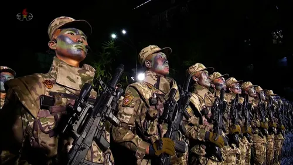
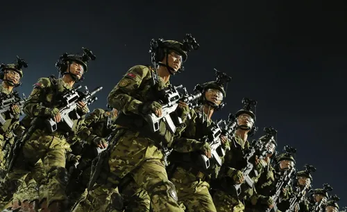
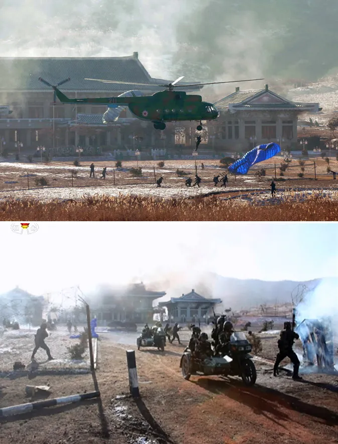
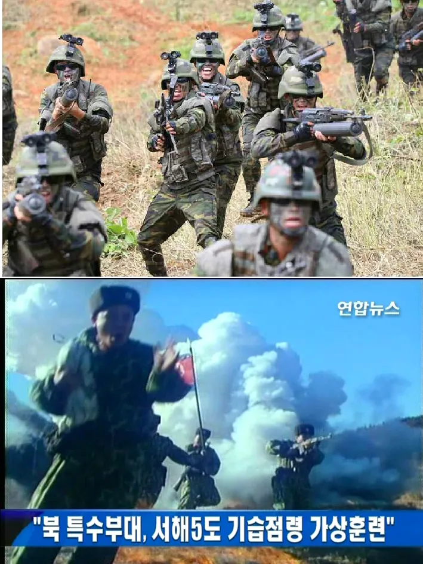
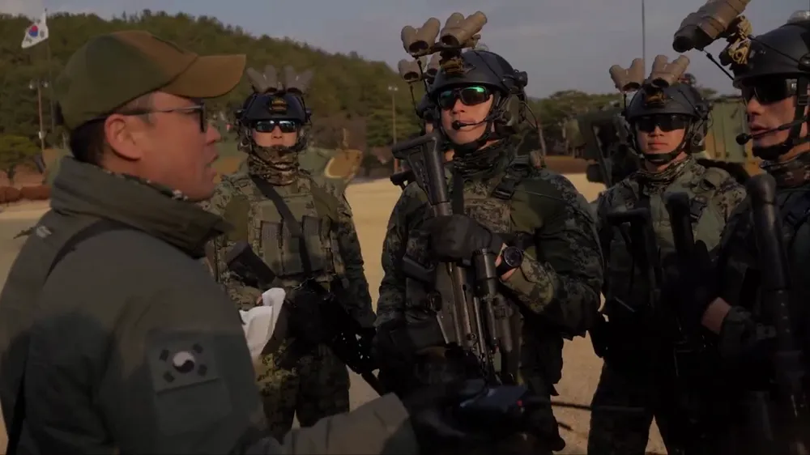
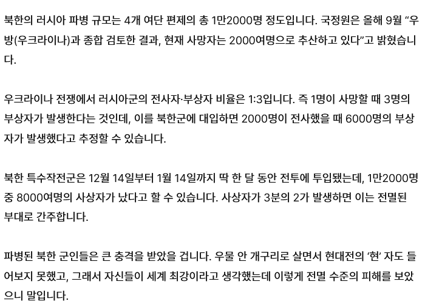
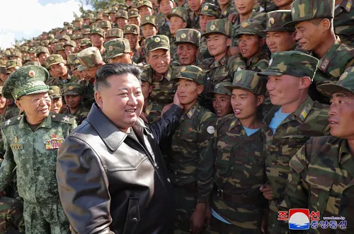

북괴군이 지금 러우전쟁에 파병한 1만 2천명의 병력은
전부 인민군 '폭풍군단' 소속 병력들이다.
그게 뭔데 밀씹덕아 냐고?


이런거 하는 새끼들임
즉 우리로 치면

특수전사령부 소속 특전여단을 파병을 때린 상황이다 이 말임
뭐 우리도 월남전 파병당시 정예라고할 수 있는 해병대를 파병하긴했고
쟤들은 특작군이라해도 우리 특공수준에도 모자란 상비병보다 살짝 나은 수준이라는걸 감안하면
그럴 수 있는 선택임
그런데 뭐 일단 교리상 쟤들도 '특수작전'을 하는 놈들이니
기본적으로 투입해야하는건 후방교란이나 침투 뭐 그런건데
이 병신들은 작전권 그딴거 없이 그냥 러시아군에 용병으로 팔아 쳐먹은거라
참호전 어택땅 고기방패로 나가버림
당연한거지만 707도 델타포스도 그냥 벌판에서 반자이 돌격하면
전역 후 다시 징집당해서 시발시발 거리며 M16 들고 달려가는 김철수 예비역병장하고 다를게 없음
그 결과

딱 1년만에 전멸함
신규충원은 되긴했지만 사실상 테세우스의 배 수준
애초에 러우전쟁에 파병한게 항공륙전대(우리로 치면 공수부대) 제외하곤 거의 3분의 2를 영끌해서 갖다 박은건데
그게 터짐

우리로 치면 이새끼는 특전사 예하부대 절반을 돈 벌어서 치즈사먹겠다고 믹서기에 넣고 갈아버린거임
어지간한 병신새끼가 아니다 싶지만 만약 전쟁나면 핵배낭 메고 넘어올 새끼들 지 손으로 갈아버리는거니 뭐
우리 입장에서는 나쁘지 않은 상황인거고
모든 확실은 할수 없잖아. 파병이 한번이 아니라 여러차례 파병 나가면 요구하는것도 커지고
현대의 러시아식 전투 전술을 지휘권이 없이 소규모로 익혔다고 해도
지금의 한국군에겐 큰 부담임 휴전선에서 움직이는 것도 그렇고
전면전은 아니라도 소규모의 분쟁이 생길 가능성도 있음